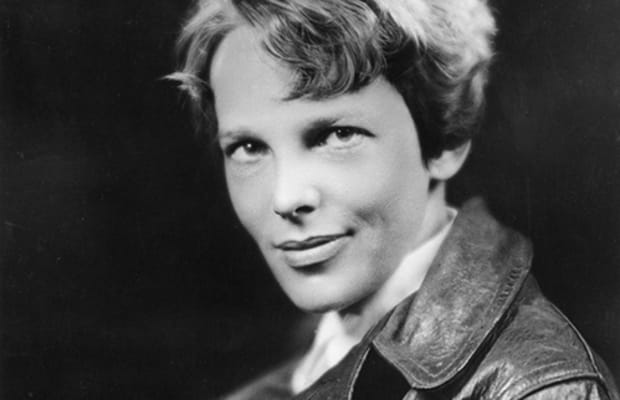

“The best protection any woman can have… is courage.”
abolitionist, human rights activist, and one of the first leaders of the women’s rights movements who fought for women’s suffrage
“When I found I had crossed that line, I looked at my hands to see if I was the same person. There was such a glory over everything.”
escaped slavery and became a conductor in the underground railroad. she helped free about 300 enslaved people between 1850-1860
“One never notices what has been done; one can only see what remains to be done.”
pioneer in the study of radiation, fought sexism and lack of respect from others in her field, noble prizes in physics and chemistry
“Never interrupt someone doing something you said couldn’t be done.”
first woman to fly solo across the atlantic
“I am not sick. I am broken. But I am happy to be alive as long as I can paint.”
mexican painter who showed mexico’s history in her work that reflect cultural and social values today


“From here on I will be your little mother, and you will be my little children. It will be my job to get my children to Spain and freedom.”
organized a led the comet line to help allied airmen escape from nazi-occupied belgium
“Racism has no place in the hearts and minds of our children.”
first african american student to integrate an elementary school in the south
“We realize the importance of our voices only when we are silenced.”
Pakistani activist who advocates for female education, youngest noble prize winner
“The moment we decide to fulfill something, we can do anything.”
environmental activist internationally known for challenging leaders to take immediate action for climate change
“We all have so much more in common than what separates us.”
first female/POC vice president elect in the US, 2nd african american woman and first south asian-american senator in US history